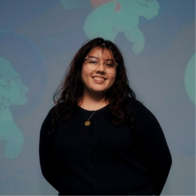
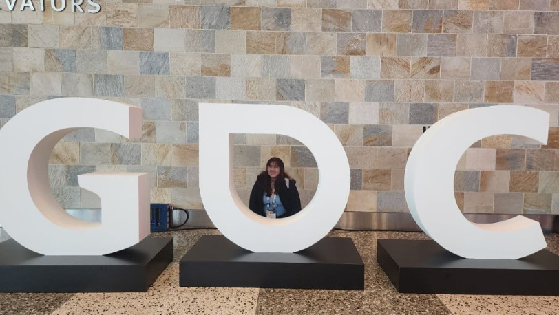
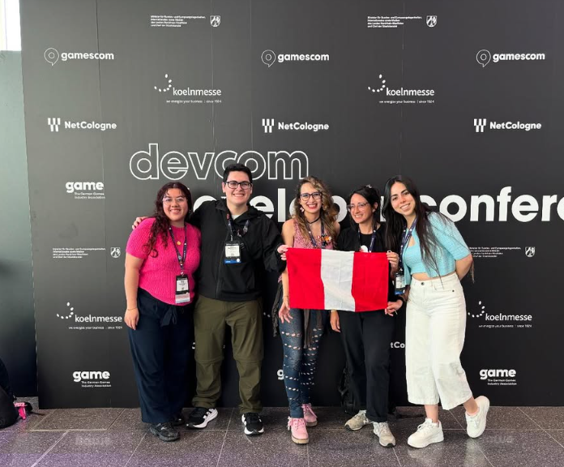
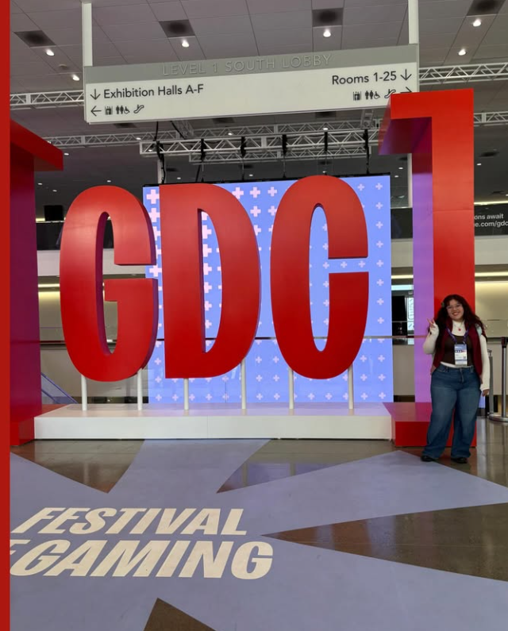
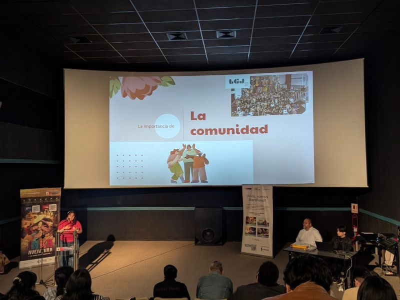
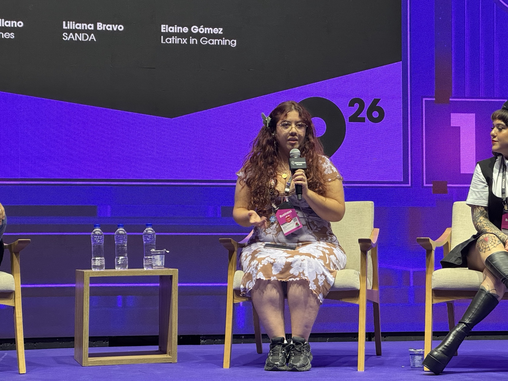
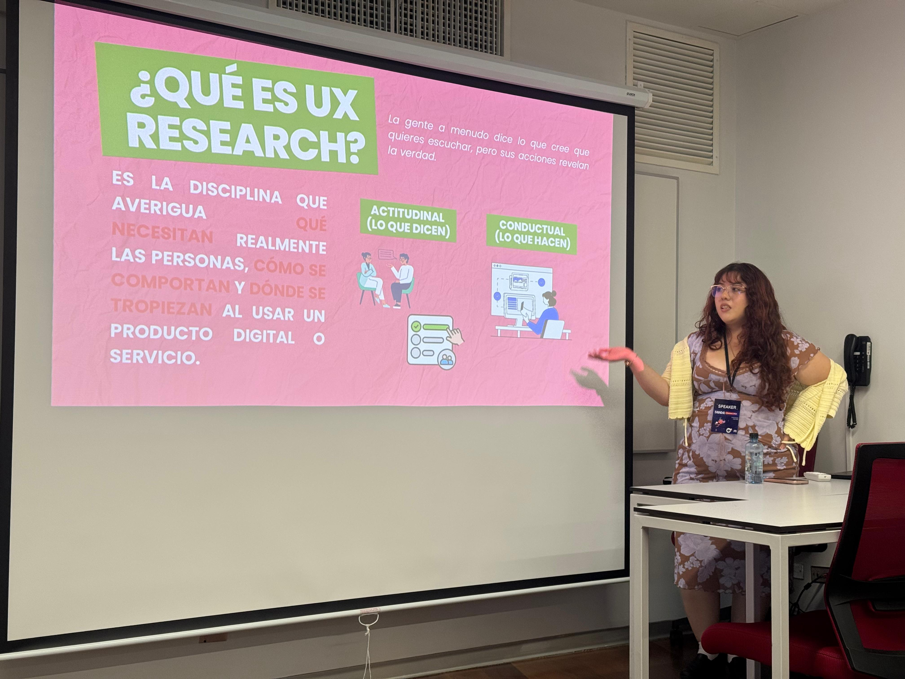
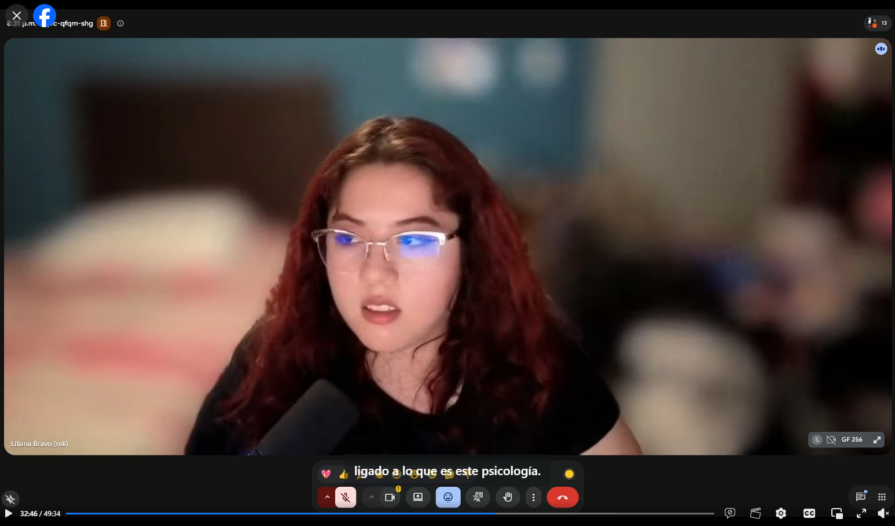
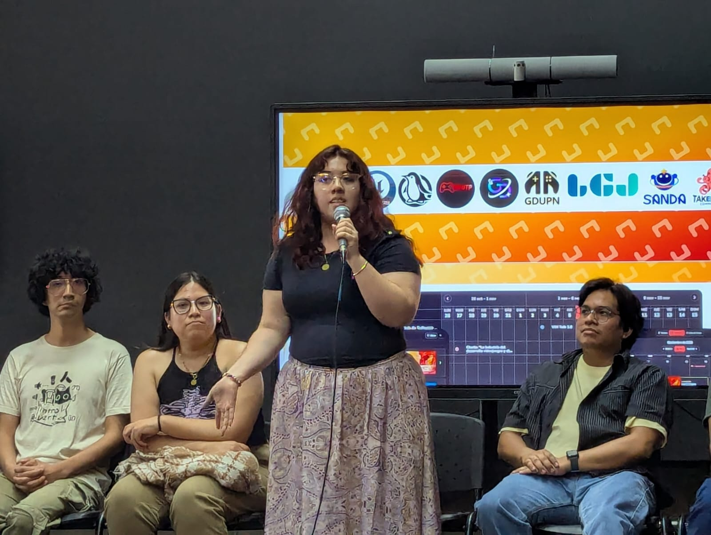

DESIGN
UX/UI & web experiences
From educational platforms and client sites to game flows, dialogue interfaces and content systems.
I'm Liliana Bravo: a Peruvian UX designer, game creator, researcher and community leader. I move between interfaces, game systems, academic questions and the human work of bringing people together.
Bachelor's degree in Computer Science · UPC, 2019—2024

From educational platforms and client sites to game flows, dialogue interfaces and content systems.
I build readable interactions for playful systems and collaborate across art, programming, sound and production.
I create accessible spaces where emerging game developers can learn, meet peers and find opportunities.
A short map of the moments that shaped my practice across technology, games, research and community.
graduated as Bachelor of Computer Science at UPC
Freelance work on two confidential desktop tools at PUCP.
Web prototypes and client landing pages at ID Technology.
UX Research & DesignOps internship at BCP
Founded SANDA
Became a Women in Games Ambassador
Presented the short paper on facial emotion recognition for video game testing named Emotionalyzer
Founded Raymi Games
Web Designer for IT Class at BN Tech Consulting
Joined the Community of Unreal Engine in Lima as Event Coordinator.
Joined Global Game Jam intership
Joined the Video Game Careers Advisory Committee at Toulouse Lautrec



Every talk has a visual attached or a clearly marked slot for its original event image. Two sessions also include a recording.


Panel on communities, purpose and social impact.

Speaker and organizer, with direct Q&A for emerging developers.


Game development and community leadership.
International Game Jam
Canadore College + Tecsup
Video Game Careers 10th Anniversary Awards
Toulouse Lautrec
Guild
Guild Game Jam · Jury member
Events, game jams, talks, partnerships and opportunities are a meaningful part of my practice.